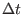
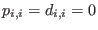
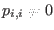
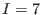
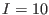
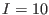

Next: Computational aspects Up: Biogeochemical models Previous: Mathematical formulation Contents
Two basic aspects which are included in the mathematical formulation for the biogeochemical equations discussed in section 9.1 are to be reproduced by the numerical methods applied: conservation and positivity. Another constraint for the choice of numerical methods is that they should be sufficiently stable and accurate. In order to facilitate this, a split method is applied separating the numerical solution of the transport part (advection, diffusion) and the reaction part. By doing so, we take splitting errors into account which should however be not significant as long as the typical reaction time scales are much longer than the constant model time step .
In the transport step
in which the right hand side is set to zero,
finite volume discretisations
are used such that conservation of mass is guaranteed.
The spatial discretisation is carried out by separating the water column
into  not necessarily equidistant intervals of height
not necessarily equidistant intervals of height  .
The state variables, represented by layer-averaged values,
are located in the centres of these intervals, the advective and diffusive
fluxes are located at the interfaces in between.
The transport step itself is subject to operator splitting.
The autonomous motion of the state variables (including sinking or
rising due to negative or positive buoyancy, respectively)
is discretised by means of
TVD (Total Variation
Diminishing) advection schemes, for which several choices are
available, see Pietrzak (1998).
These TVD schemes are positivity conserving due to their TVD
property.
The most accurate among those
schemes is the so-called
PDM-limited P scheme which has been described in detail
by Leonard (1991).
.
The state variables, represented by layer-averaged values,
are located in the centres of these intervals, the advective and diffusive
fluxes are located at the interfaces in between.
The transport step itself is subject to operator splitting.
The autonomous motion of the state variables (including sinking or
rising due to negative or positive buoyancy, respectively)
is discretised by means of
TVD (Total Variation
Diminishing) advection schemes, for which several choices are
available, see Pietrzak (1998).
These TVD schemes are positivity conserving due to their TVD
property.
The most accurate among those
schemes is the so-called
PDM-limited P scheme which has been described in detail
by Leonard (1991).
For the diffusion, a central in space scheme is used which is slightly biased towards a backward in time scheme in order to avoid asymptotic instability (see Samarskij (1984)). By doing so, positivity is obtained and the schemes are practically second order in time and space.
With the discretisations of the transport terms given above,
accuracy, positivity and conservation of the state variables are
guaranteed by means of standard schemes. For the reaction terms,
Burchard et al. (2003) recently developed schemes which also fulfil these
requirements.
Due to the operator split between transport and reaction terms,
only ordinary differential equations (ODEs)
have to be treated numerically for the latter terms.
For the case of conservative biogeochemical models with
, these schemes are identical to those given
by Burchard et al. (2003).
For
, some modifications are necessary.
Three classes of schemes are considered:
Explicit schemes such as the Euler-forward scheme and second- and
fourth-order Runge-Kutta schemes (see section 8.13).
These schemes are known to be conservative, but for
sufficiently large time steps they may compute negative values
of state variables also for non-negative state variables.
This may be avoided by small time stepping, which however usually
leads to an enormous increase of the computational effort such that
these schemes lose their practical relevance in this context.
In order to solve this problem,
Patankar (1980) had suggested the first-order in time
positive definite scheme
(253), and Burchard et al. (2003) have extended this
to second order, see (254).
However, these schemes are not conservative, since
source and sink terms are numerically treated in a different way.
Fully conservative and non-negative schemes in first- and second-oder
in time have thus been suggested and tested for
ordinary differential equations by Burchard et al. (2003),
with
in equations. (255) and (256)
in section 8.13.
This equal numerical treatment of sources and sinks
results in implicit linear systems of equations.
Since only ordinary differential equations are to be solved in each
grid point, these systems have small dimensions, for example  for
the Fasham et al. (1990) model (see section  ) and
 for the Neumann et al. (2002) model
(see section
) and
 for the Neumann et al. (2002) model
(see section  ).
Thus, these linear systems may be directly solved
by Gaussian elimination schemes.
Nevertheless, one can also employ iterative methods.
Especially for the linear system arising in the context of the present
type of equations it is proven in Burchard et al. (2003)
that the involved matrix is always non-singular and the
standard Jacobi-type method converge to the unique solution of the system.
Later, Bruggeman et al. (2006) found that the Modified Patankar
schemes as described in equations (255) and (256)
are only conservative for systems with one model currency
(e.g. nitrogen in the model of Fasham et al. (1990)),
but do not conserve stoichiometric ratios, when several
limiting nutrients are present. To solve that problem,
Bruggeman et al. (2006) developed first- and second-order
Extended Modified Patankar (EMP) schemes, which are
stoiciometrically conservative and explicit, such that they do
not need to solve implicit systems of linear equations.
).
Thus, these linear systems may be directly solved
by Gaussian elimination schemes.
Nevertheless, one can also employ iterative methods.
Especially for the linear system arising in the context of the present
type of equations it is proven in Burchard et al. (2003)
that the involved matrix is always non-singular and the
standard Jacobi-type method converge to the unique solution of the system.
Later, Bruggeman et al. (2006) found that the Modified Patankar
schemes as described in equations (255) and (256)
are only conservative for systems with one model currency
(e.g. nitrogen in the model of Fasham et al. (1990)),
but do not conserve stoichiometric ratios, when several
limiting nutrients are present. To solve that problem,
Bruggeman et al. (2006) developed first- and second-order
Extended Modified Patankar (EMP) schemes, which are
stoiciometrically conservative and explicit, such that they do
not need to solve implicit systems of linear equations.
Karsten Bolding 2012-12-28